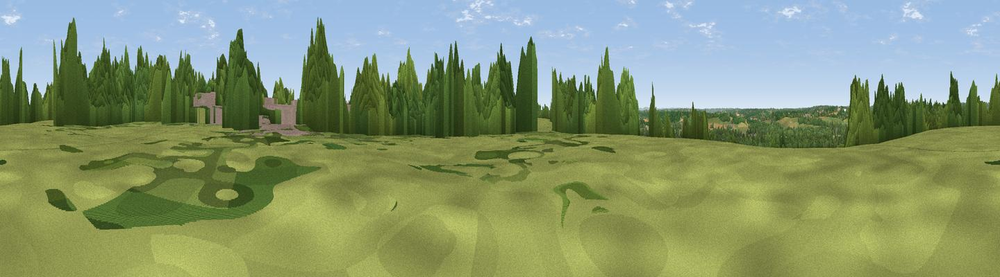

Little Heath
#36419 in England · top 49% of its area beats it · near ThealeWhere it is
The exact computed spot (SU 65340 73367). Click the marker for map links.
The view, rendered

A 360° render of this exact spot computed from the terrain model, tree cover and land cover — summer colours, afternoon light, calibrated against photographs of famous viewpoints. Real trees, hedges and buildings will differ in detail.
The panorama
Grey silhouette: terrain skyline in each direction (720 bearings, Earth curvature and refraction included). Dashed green: skyline with trees (+15 m) and buildings (+8 m) as obstacles. Blue strip: how far the ground is visible on each bearing.
Where the view opens
Wedge length = distance to the farthest visible ground on that bearing (vegetation-aware). Rings at 10, 25 and 50 km.
What fills the view
40% grassland · 38% woodland · 11% built-up · 11% cropland
Angular shares of the visible panorama (visual magnitude), not map area. Landscape diversity 0.53 (0–1 Shannon).
Key numbers
More beautiful places nearby
The staircase of upgrades: each row has a higher view potential than everything closer. Driving times are estimates from straight-line distance, calibrated against real road routing — check an actual route before setting out.
| Place | Direction | Drive | Score |
|---|---|---|---|
| Viewpoint near Theale | S · 1 km | ~2 min | 48.1 |
| Viewpoint near Whitchurch-on-Thames | NNW · 5 km | ~11 min | 55.0 |
| Viewpoint near Streatley | NW · 10 km | ~19 min | 56.7 |
| Viewpoint near Streatley | NW · 10 km | ~20 min | 57.3 |
| Viewpoint near Moulsford | NW · 12 km | ~22 min | 58.8 |
| Viewpoint near Compton | NW · 14 km | ~26 min | 64.1 |
| Viewpoint near Cookley Green | N · 18 km | ~31 min | 64.3 |
| Viewpoint near Cookley Green | NNE · 19 km | ~32 min | 68.5 |
51.45552, -1.06100 · source: dobih hill · position refined by local search. Computed location — check access rights before visiting.